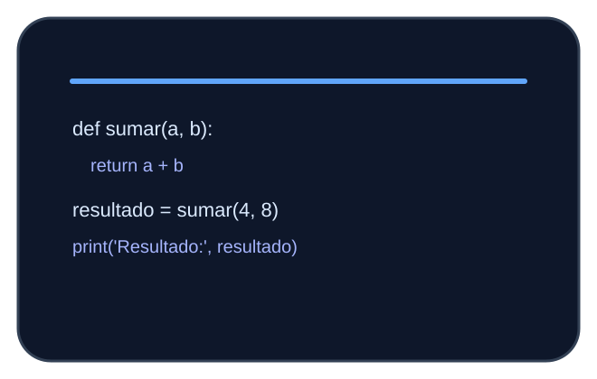
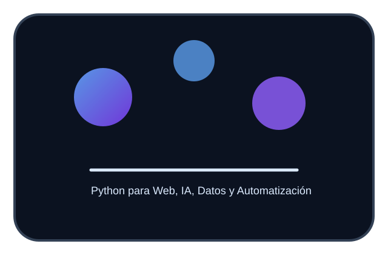
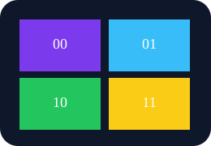
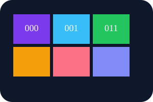
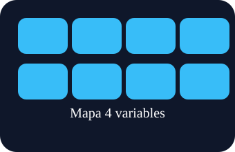
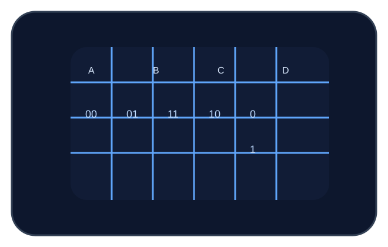
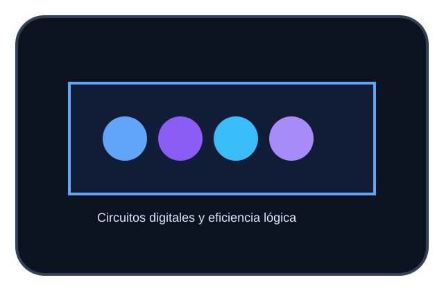

Variables
Una variable es un nombre que se usa para almacenar un valor. En Python no hace falta declarar el tipo antes de usarla.
nombre = 'Ana'
edad = 23
activo = TrueUnidad 3
Python y Mapas de Karnaugh
Python es un lenguaje de programación versátil, fácil de aprender y ampliamente usado en ciencia de datos, desarrollo web, automatización y más.

En Python todo es sencillo: las variables guardan información, los operadores transforman datos y las estructuras permiten tomar decisiones repetitivas.
Una variable es un nombre que se usa para almacenar un valor. En Python no hace falta declarar el tipo antes de usarla.
nombre = 'Ana'
edad = 23
activo = TruePython usa operadores para contar, comparar y combinar valores.
input() lee datos desde el usuario y print() muestra resultados.
nombre = input('Nombre: ')
print('Hola', nombre)Permiten tomar decisiones según el valor de una expresión.
if edad >= 18:
print('Adulto')
elif edad >= 13:
print('Adolescente')
else:
print('Niño')Repetir código con for y while ayuda a procesar listas y hacer tareas múltiples.
for i in range(5):
print(i)
n = 0
while n < 5:
print(n)
n += 1
Estos ejemplos muestran cómo escribir ejercicios básicos en Python de forma clara y precisa.
a = int(input('a: '))
b = int(input('b: '))
print('Suma =', a + b)n1 = float(input('Nota 1: '))
n2 = float(input('Nota 2: '))
promedio = (n1 + n2) / 2
print('Promedio =', promedio)numero = int(input('Número: '))
if numero % 2 == 0:
print('Par')
else:
print('Impar')
Un mapa de Karnaugh ayuda a visualizar términos de una función lógica y encontrar expresiones más simples.
Es una tabla visual que organiza combinaciones de variables para identificar grupos de términos adyacentes.
Sirve para simplificar funciones booleanas y reducir la complejidad de circuitos digitales.



Simplificar la función F = Σ(0,1,2,5) en un mapa de 2 variables.
AB 00 01 11 10
F 1 1 0 1
Agrupar 00 y 01 -> A'
Agrupar 00 y 10 -> B'
Resultado: F = A' + B'
Python y Karnaugh se aplican en diferentes áreas: desde desarrollo de software hasta diseño de circuitos y automatización digital.
